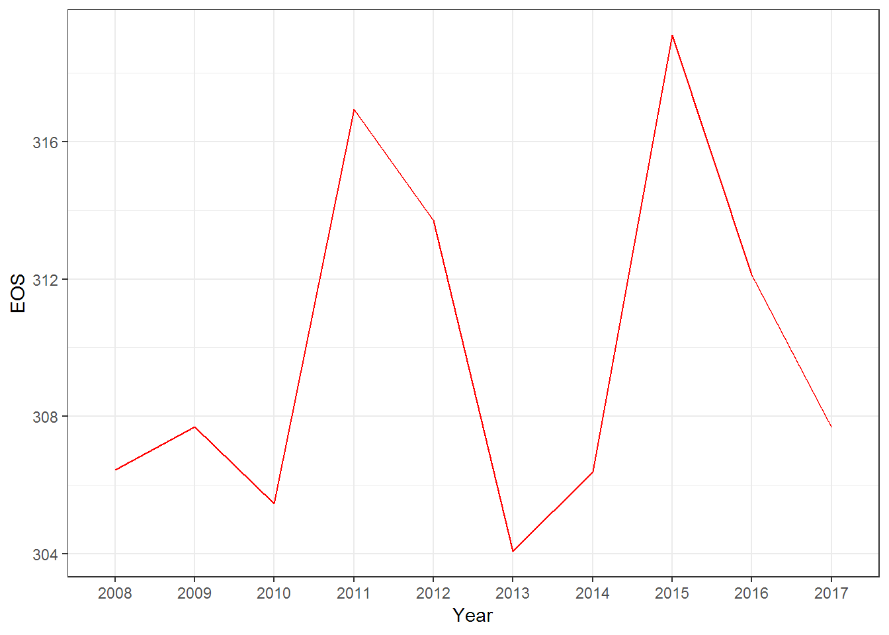
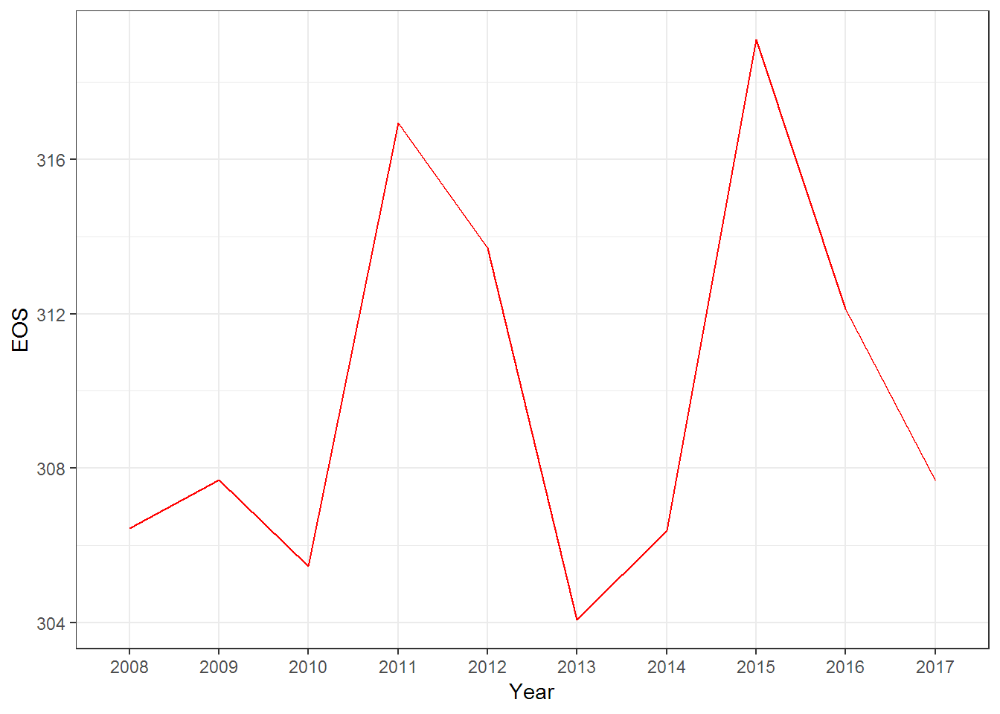

Tracking tree phenology of Nature View Park in Buffalo
Yuhao Xie
Introduction
Phenology has been proven as a sensitive and integrative indicator of climate variability and vegetation growth responses to climate change (X. Zhao, K. Tan, 2011). The understanding of phenology brings significant insight into both climate and vegetation interactions and their impacts on different spatial and temporal scales (Y. He, 2013). NDVI and EVI are two most widely used indexes in vegetation phenology study.This project aims at tracking phenology change of forest at Nature View Park in Buffalo in the past decade. Further analysis will estimate the Start of Season(SOS) and End of Season(EOS) for each year during the last decade illustrate a evidence of potential climate change.
Data and methods
Data acquisition
The traditional way of monitoring forest phenology uses remote sensing data such as Landsat TM or MODIS data which is efficient in large-scale studies.
In this study, I use the Application for Extracting and Exploring Analysis Ready Samples(AρρEEARS) to download MODIS data.AρρEEARS provides a simple and efficient way to access and transform geospatial data from a variety of federal data archives. It enables users to subset geospatial datasets using spatial, temporal, and band/layer parameters. Two types of sample requests are available: point samples for geographic coordinates and area samples for spatial areas via vector polygons.
This project bases on both two satellites of MODIS system, Aqua and Terra, to extract the NDVI of the Nature View Park in Buffalo. The 16-day NDVI layer of MODIS Vegetation Indices product are used. Each satellite provides global vegetation indices including NDVI, EVI and LAI every 16 days with 1km spatial resolution. But Aqua and Terra are on the two different orbits which let them have a 8 days interval between each other for visiting a same place. Thus, we can have 8 days interval NDVI data for the study area rely on combining data from both two satellites. The time period of data is from 01/01/2008 to 11/01/2018. AρρEEARS also provides API for submitting request and downloading data from R.
Load required packages for using AρρEEARS API and further wrangling on data(you may need to install some packages):
library(httr)
library(jsonlite)
library(RCurl)
library(ggplot2)
library(dplyr)
library(lubridate)
knitr::opts_chunk$set(cache=TRUE) # cache the results for quick compilingAρρEEARS API requires user to have an account and log in before use further functions. You can sign up an account on AρρEEARS website. Since most of people visit this project don’t have account for that. I downloaded the required data by the code chunks below and pushed it to my github repository and provide codes in the next section for downloading data from my repository.
For using the API, using the code below to log in with your username and password first and check the log in status.
#log in the system with NASA EarthData account username and password
secret <- base64_enc(paste("your username", "password", sep = ":"))
response <- POST("https://lpdaacsvc.cr.usgs.gov/appeears/api/login",
add_headers("Authorization" = paste("Basic", gsub("\n", "", secret)),
"Content-Type" = "application/x-www-form-urlencoded;charset=UTF-8"),
body = "grant_type=client_credentials")
#check log in status
token_response <- prettify(toJSON(content(response), auto_unbox = TRUE))
token_response
response_p <- GET("https://lpdaacsvc.cr.usgs.gov/appeears/api/product")
product_response <- toJSON(content(response_p), auto_unbox = TRUE)The API requires a JavaScript Object Notation(JSON) format task file for submitting a request. the task file should includes the sample type, period, product id and layer name. For point sample, only the geographic coordiates needed. Since the spatial resolution is 1km on MODIS data, one pixel of the image should be enough to cover the whole study area. As the task file below describes, the 16-days NDVI data of the study area with 1km resolution from both two satellites from 2008 to 2018 will be included in request. It can take a few seconds even minutes for completing the request.
# create a task request
task <- '{
"task_type": "point",
"task_name": "my-task",
"params":{
"dates": [
{
"startDate": "01-01-2008",
"endDate": "11-01-2018"
}],
"layers": [
{
"product": "MOD13A2.006",
"layer": "_1_km_16_days_NDVI"
},
{
"product": "MYD13A2.006",
"layer": "_1_km_16_days_NDVI"
}],
"coordinates": [
{
"latitude": 43.0444,
"longitude": -78.7833
}]
}
}'
task <- fromJSON(task)
task <- toJSON(task, auto_unbox=TRUE)
#submit the task request
token <- paste("Bearer", fromJSON(token_response)$token)
response <- POST("https://lpdaacsvc.cr.usgs.gov/appeears/api/task", body = task, encode = "json",
add_headers(Authorization = token, "Content-Type" = "application/json"))
task_response <- prettify(toJSON(content(response), auto_unbox = TRUE))
task_responseThe point sample requset results in two csv files including all the acquired data and quality descriptions. The API does not support bath download, a for loop is used to download both to csv files to the working directory.
#check task bundle
token <- paste("Bearer", fromJSON(token_response)$token)
response <- GET(paste("https://lpdaacsvc.cr.usgs.gov/appeears/api/bundle/", task_id, sep = ""), add_headers(Authorization = token))
bundle_response <- prettify(toJSON(content(response), auto_unbox = TRUE))
bundle_response
#Download file
#get csv file id and name
file_list<-fromJSON(bundle_response)$files
file_id<-file_list$file_id[file_list$file_type=="csv"]
file_name<-file_list$file_name[file_list$file_type=="csv"]
# create a destination directory to store the file in
dest_dir <- getwd()
filepath <- paste(dest_dir, file_name, sep = '/')
suppressWarnings(dir.create(dirname(filepath)))
# write the file to disk using the destination directory and file name
for(i in 1:length(file_id)){
response <- GET(paste("https://lpdaacsvc.cr.usgs.gov/appeears/api/bundle/", task_id, '/', file_id[i], sep = ""),
write_disk(filepath[i], overwrite = TRUE), progress(), add_headers(Authorization = token))
}
#read and view data
data<-read.csv(file_name)
View(data)Methods
#read data from my github repository
data1<-read.csv(text=getURL("https://raw.githubusercontent.com/AdamWilsonLabEDU/geo503-2018-finalproject-Henryxie1003/master/my-task-MOD13A2-006-results.csv"))
data2<-read.csv(text=getURL("https://raw.githubusercontent.com/AdamWilsonLabEDU/geo503-2018-finalproject-Henryxie1003/master/my-task-MYD13A2-006-results.csv"))#data wrangling
#filter out cloudy pixel
data1_nonCloud<-filter(data1,MOD13A2_006__1_km_16_days_VI_Quality_MODLAND!='0b10')
data2_nonCloud<-filter(data2,MYD13A2_006__1_km_16_days_VI_Quality_MODLAND!='0b10')
#combine two data frame and rename column
data1_new<-data1_nonCloud%>%select(Date,MOD13A2_006__1_km_16_days_NDVI)
colnames(data1_new)[2]<-'NDVI'
data2_new<-data2_nonCloud%>%select(Date,MYD13A2_006__1_km_16_days_NDVI)
colnames(data2_new)[2]<-'NDVI'
data_combine<-rbind(data1_new,data2_new)
#add year and number of days marker to each observation
data_combine$Year<-substr(data_combine$Date,1,4)
data_combine$NumDays<-yday(data_combine$Date)
#estimate SOS and EOS
SOS_range<-data_combine%>%filter(NumDays>=50&NumDays<=150)
SOS<-data.frame(Year=character(),SOS=double())
for (i in 2008:2018) {
SOS_t<-lm(NumDays~NDVI, SOS_range%>%filter(Year==i))%>%predict(data.frame(NDVI = c(0.5)))
SOS<-rbind(SOS,c(i,SOS_t))
}
names(SOS) <- c("Year", "SOS")
SOS$Year<-as.character(SOS$Year)
EOS_range<-data_combine%>%filter(NumDays>=250&NumDays<=350)
EOS<-data.frame(Year=integer(),SOS=double())
for (i in 2008:2017) {
EOS_t<-lm(NumDays~NDVI, EOS_range%>%filter(Year==i))%>%predict(data.frame(NDVI = c(0.5)))
EOS<-rbind(EOS,c(i,EOS_t))
}
names(EOS) <- c("Year", "EOS")
EOS$Year<-as.character(EOS$Year)Results
Show tables, plots, etc. and describe them. 
 
